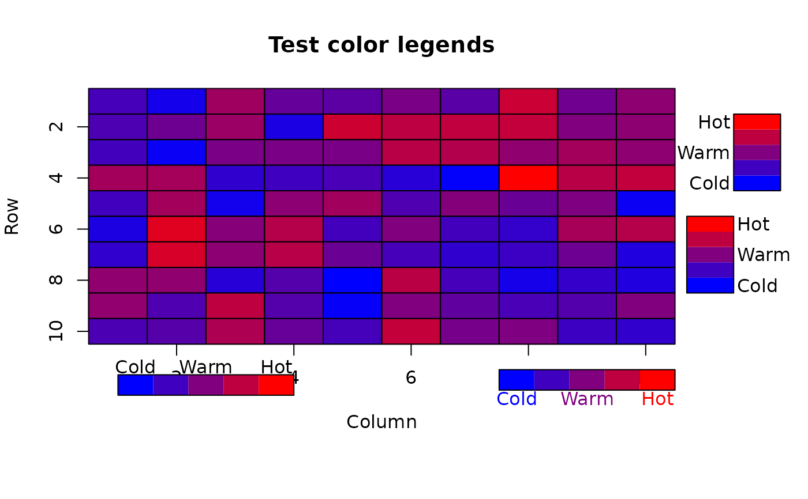

Legend matching categories or values to colors
color.legend.RdDisplay a color legend on a plot
Arguments
- xl,yb,xr,yt
The lower left and upper right coordinates of the rectange of colors in user coordinates.
- legend
The labels that will appear next to some or all of the colors.
- rect.col
The colors that will fill the rectangle.
- cex
Character expansion factor for the labels.
- align
How to align the labels relative to the color rectangle.
- gradient
Whether to have a horizontal (x) or vertical (y) color gradient.
- ...
Additional arguments passed to text.
Details
color.legend displays a rectangle defined by the first four arguments filled with smaller rectangles of color defined by the rect.col argument. Labels, defined by the legend argument, are placed next to the color rectangle. The position of the labels is determined by whether the color rectangle is horizontal or vertical and the align argument. The default value of lt places the labels at the left of a vertical rectangle or the top of a horizontal one. rb puts them on the other side. To have the labels in the same color as the rectangles, include a col argument that will be passed to text as in the example.
There can be fewer labels than colors. The labels will be evenly spaced along the rectangle in this case. It is possible to use empty labels to get uneven spacing. The user can pass more labels than colors, but the labels will almost certainly be crowded and I have only found one use for this. If the user wants the labels at the intersection of the boxes rather than in the center, see the alternative specification for the labels in the example (thanks Claudia Tebaldi). To have complete control over the labels, see gradient.rect and text or mtext.
colorlegend in the shape package offers a different approach, creating a large number of colors from a color generating function (a bit like color.gradient) and then allowing the user to specify tick marks at arbitrary points along the color bar.
Examples
# get some extra room
par(mar=c(7,4,4,6))
testcol<-color.gradient(c(0,1),0,c(1,0),nslices=5)
col.labels<-c("Cold","Warm","Hot")
# this will put the labels at the intersections
# col.labels<-c("","Cold","","Warm","","Warmer","","Hot","")
color2D.matplot(matrix(rnorm(100),nrow=10),c(1,0),0,c(0,1),
main="Test color legends")
color.legend(11,6,11.8,9,col.labels,testcol,gradient="y")
color.legend(10.2,2,11,5,col.labels,testcol,align="rb",gradient="y")
color.legend(0.5,-2,3.5,-1.2,col.labels,testcol)
color.legend(7,-1.8,10,-1,col.labels,testcol,align="rb",col=testcol[c(1,3,5)])

par(mar=c(5,4,4,2))